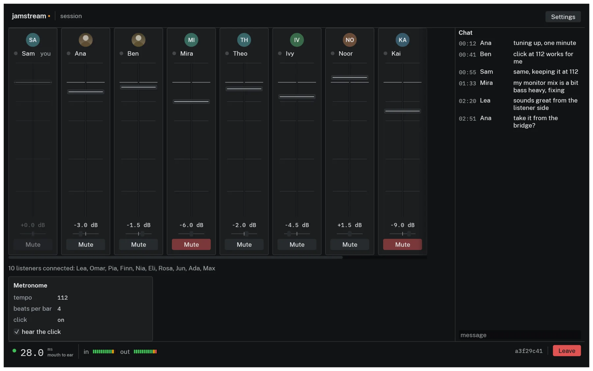

Sound travels about a foot per millisecond. Two musicians ten feet apart on a stage are already playing ten milliseconds in each other's past, and an orchestra spans several times that. Somewhere around 30 ms the delay stops being room acoustics and starts being lag, and by 70 ms you're not playing together anymore, you're taking turns. A video call runs 150 to 300 ms mouth to ear and nobody minds, since conversation can take turns and music can't.
JamStream is a desktop app for jamming over the internet at latencies you can play on. One musician hosts. The app launches a session server on their own computer or in their own cloud account, mints one invite link per seat, and everyone else pastes theirs. Up to ten musicians play, up to twenty listeners tune in, the session can stream to Twitch and YouTube and record takes into the host's own bucket, and when the music stops the server deletes itself.
Where 30 ms goes
I set the target at under 30 ms mouth to ear. The network is paid twice, your uplink and everyone's downlink. Measured medians with real Opus and real encryption over a simulated network are 14.7 ms at a 1 ms round trip to the server, 24.3 ms at a same-region 12 ms round trip, and 69.8 ms coast to coast over 45 ms of DSL.
The session server runs a mix tick every 2.5 ms, which is 120 samples at 48 kHz. You're left out of your own mix because you monitor yourself locally through your hardware, and at low latency a mix that includes your own signal late is unplayable.
The jitter buffer's blind spot
There's a failure mode between the ordinary recovery paths. If a packet arrives one frame behind the playout position and that pull was concealed, playout steps back a frame. If arrivals jump 512 frames, that reads as a stream restart and the buffer resets. Between those two lies a hole. A persistent offset of 2 to 511 frames means every packet is slightly late, every pull conceals, and both escape hatches are out of reach forever. The signature is a concealed pull with nothing playable on a tick that also dropped a late packet, and if it persists for 60 ticks the buffer abandons its playout position and re-anchors.
Renting a server for the evening
A rented server that outlives the jam is a subscription you didn't sign up for, so teardown is a dead man's switch that lives in the guest, never on your laptop. While musicians are connected, the server touches an activity file once a second. A systemd timer compares that file's age against the idle window (default 10 minutes) and the session's hard cap (default 12 hours).
The guard measures both in /proc/uptime seconds and never subtracts wall-clock timestamps, because a cloud VM routinely boots with a wrong hardware clock and takes a large NTP step a minute later. A wall-clock idle window would read that step as ten minutes of silence and destroy a server with musicians playing on it. Three hours of a four-piece costs about $0.08.